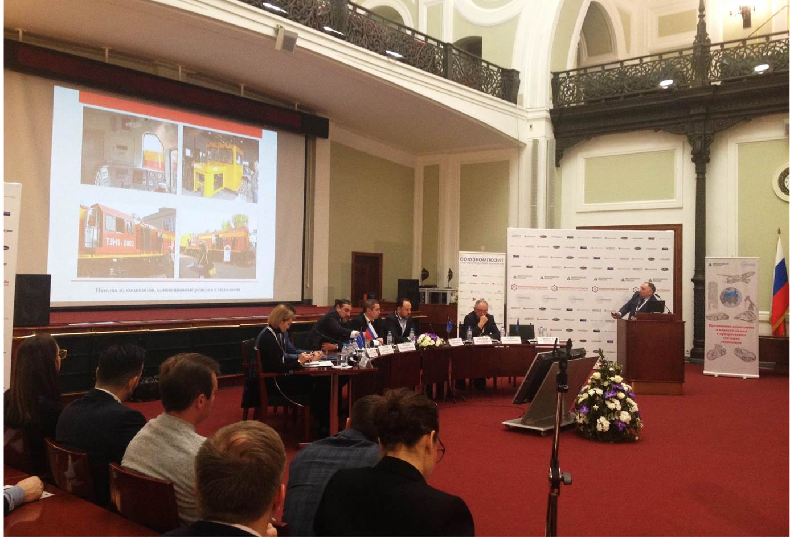

<section class="news page__global">
  <div class="news__inner">

    <h1 class="news__title page__title">ХI Международная конференция "Композитные материалы. Производство и применение, тенденции рынка"
    </h1>
    <ul class="breadcrumb">
      <li class="breadcrumb__item">
        <a class="breadcrumb__link" href="index.html">Главная</a>
      </li>
      <li class="breadcrumb__item">
        <a class="breadcrumb__link" href="news.html">Новости</a>
      </li>
      <li class="breadcrumb__item">
        ХI Международная конференция "Композитные материалы. Производство и применение, тенденции рынка"
      </li>
    </ul>

    <div class="wrapper">


      <div class="news__block">
        <p class="page__text"><b>04 декабря 2017 года</b></p>
        <p class="page__text">
          24 ноября 2017 года в здании Торгово-промышленной палаты России состоялась XI Межденародная конференция "Композитные материалы. Производство и применение, тенденции рынка". С первым докладом выступил председатель совета директоров ГП "Полёт", доктор технических наук, профессор Щербаков Валерий Тихонович. Доклад вызвал огромный интерес у специалистов в области изготовления композиционных материалов, отметивших высокий уровень разработок предприятий ГП "Полёт".
        </p>
        <p class="page__text">
          Валерий Тихонович Щербаков пригласил ведущих специалистов Союза производителей композитов на круглый стол по применению КМ в ЖКХ, строительстве, энергетике, который состоится 15 декабря 2017 года на базе ООО "Полёт-сервис" в первом наукограде РФ - городе Обнинск.
        </p>
            
      </div>

      <div class="news__link-item">
        <a class="page__link news__link" href="news.html">Вернуться к ленте новостей</a>
      </div>
    </div>

  </div>
</section>